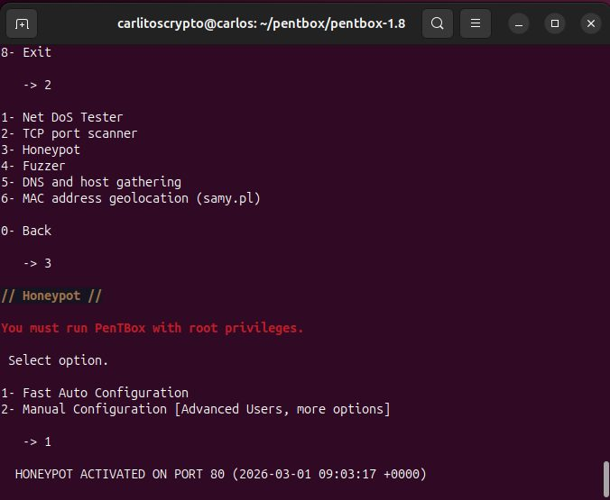
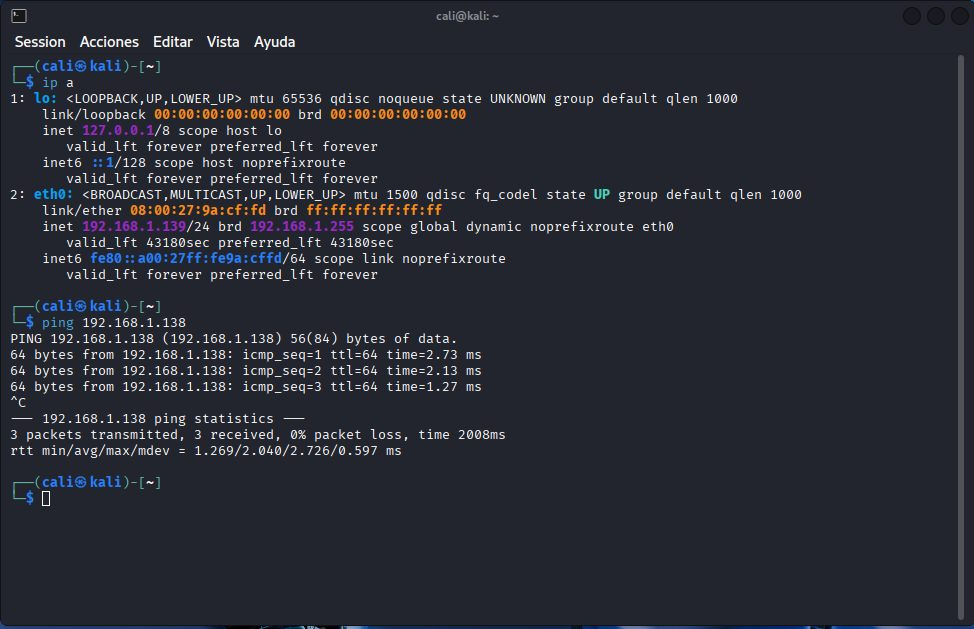
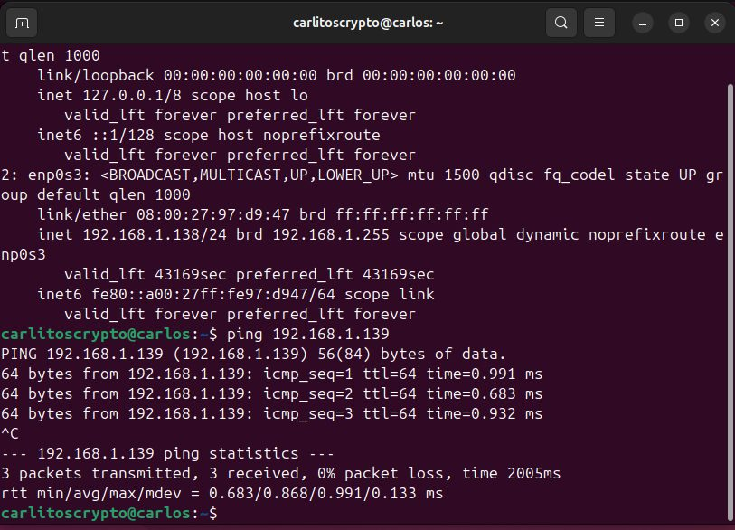
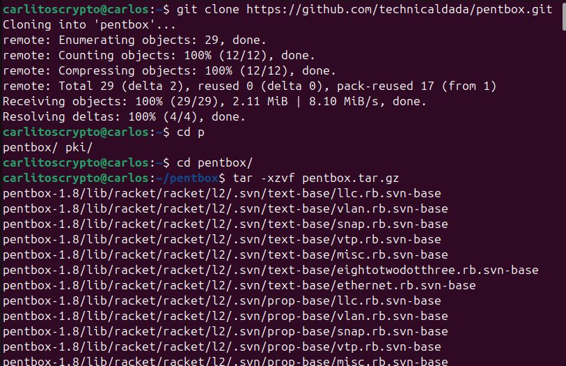
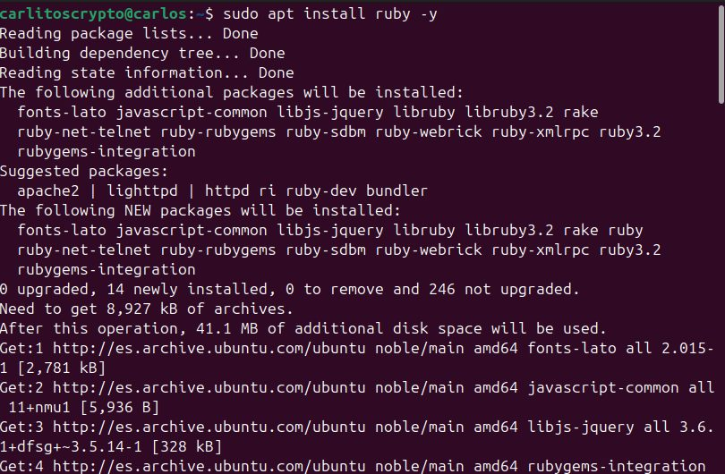
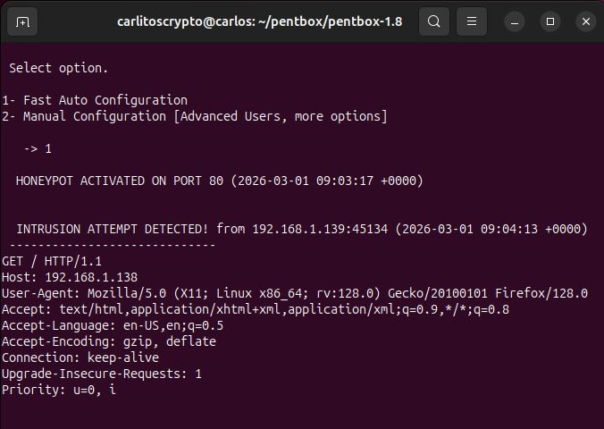
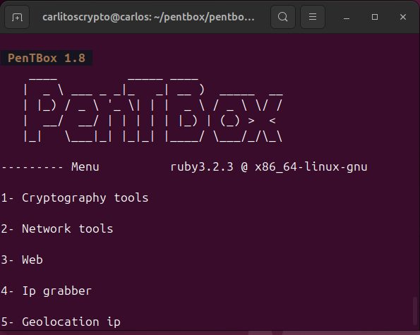

Resumen ejecutivo
Implementación de un honeypot de baja interacción para registrar conexiones y observar comportamiento de un supuesto intruso.
Metodología
El contenido se presenta como una secuencia de evidencias: cada fase resume qué se hizo, qué se validó y qué demuestra la captura. El objetivo es que un reclutador pueda entender la metodología sin tener que abrir documentación externa.
Pasos resumidos con evidencias
Configuración de red en modo puente
Fase documentada con capturas reales del laboratorio y explicada de forma resumida para lectura rápida.
Instalación de dependencias Ruby
Fase documentada con capturas reales del laboratorio y explicada de forma resumida para lectura rápida.

Despliegue de Pentbox
Fase documentada con capturas reales del laboratorio y explicada de forma resumida para lectura rápida.

Activación de honeypot HTTP
Fase documentada con capturas reales del laboratorio y explicada de forma resumida para lectura rápida.


Simulación de acceso desde atacante
Fase documentada con capturas reales del laboratorio y explicada de forma resumida para lectura rápida.

Registro de IP, puerto y User-Agent
Fase documentada con capturas reales del laboratorio y explicada de forma resumida para lectura rápida.

Conclusiones defensivas
Fase documentada con capturas reales del laboratorio y explicada de forma resumida para lectura rápida.

Hallazgos y aprendizaje técnico
Los honeypots aportan visibilidad temprana de actividad sospechosa.
Hallazgo resumido en lenguaje profesional, orientado a explicar impacto, evidencia y posible mitigación.
La captura de metadatos permite entender patrones de escaneo y acceso.
Hallazgo resumido en lenguaje profesional, orientado a explicar impacto, evidencia y posible mitigación.
El valor está en la observación y correlación, no en el sistema señuelo en sí.
Hallazgo resumido en lenguaje profesional, orientado a explicar impacto, evidencia y posible mitigación.
Galería de evidencias
Selección completa de capturas del laboratorio, saneadas para publicación profesional.